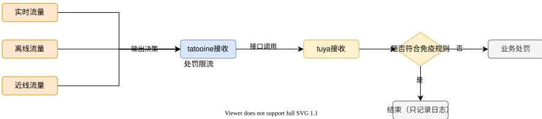

说明：tuya决策排查验证
一、背景
引擎调用tuya进行处罚的时候，需要经过多个系统处理，处理链路长，出现问题的概率高，现整理排查过程中的常见问题及排查路径，方便自主排查
二、调用链路

三、日志排查方法
已经封装成可用的报表，可直接查询使用
https://bi.sankuai.com/portal/24866
以下是详细流程，只建议研发使用
Zeus-引擎检测
-
zeus-实时引擎日志查询：核实是否命中tuya处罚决策
-
实时（菜单查询）：
- 线下环境：https://zeus.mis.rc.test.sankuai.com/data_zeus_static/#/log（策略排查-日志查询）
- 线上环境： https://zeus.sankuai.com/data_zeus_static/#/log（策略排查-日志查询）
- 离线hive表：ba_rc.base_log_zeus
-
-
zeus-离线引擎日志查询：
- 实时-线上（mafka）：https://mafka.mws.sankuai.com/topic/20178041/detail/monitor?topicId=20178042&envTag=prod&buId=113&action=monitor
- 离线hive表：ba_rc.zeus_offline_request_test_v2（账号以外的）、ba_rc.zeus_offline_request_v2_business_3（只有账号空间的）
-
处罚不生效常见问题
- 规则没生效：只有规则生效的情况下，才可以进行处置验证
-
决策附加信息拼接问题：
- 参数信息不全：不同处罚方式需要的参数不一样，具体参考说明：离线引擎tuya决策使用
- 参数评价格式不正确：注意转义，不要配多/配少了，可参考别人已经配置的可用附加信息
- 任务没运行：上游依赖数据源没有就绪，任务一直在等待状态，可去「调度详情」中验证是否已经执行完成，执行日志可查看进度百分比
-
zeus-近线引擎日志查询：
-
实时：
-
Tatooine-决策处理
-
实时（日志中心）：根据msgID直接定位查询
- 测试环境：http://logcenter.test.data.sankuai.com/search/tatooine_decision_post_processor/query/%7B%22start_time%22:%22now%2Fd%22,%22end_time%22:%22now%2Fd%22,%22keyword%22:%22%22,%22model%22:%22quick%22,%22from%22:0,%22sortInfo%22:%5B%7B%22es_datetime%22:%22desc%22%7D%5D%7D
- 线上环境：http://logcenter.data.sankuai.com/search/tatooine_decision_post_processor/query/%7B%22start_time%22:%22now%2Fd%22,%22end_time%22:%22now%2Fd%22,%22keyword%22:%22%22,%22model%22:%22quick%22,%22from%22:0,%22sortInfo%22:%5B%7B%22es_datetime%22:%22desc%22%7D%5D%7D
- 离线hive表：log.tatooine_decision_post_processor（半小时左右同步一次）
Tuya-处罚中心
-
实时：
-
测试环境：
- 菜单查询：http://skywalker.rc.test.sankuai.com/tuya/search?is_manual=true&is_system=true（操作记录）免疫规则命中的处罚，也会显示成功，不一定准确
- 查询线上mysql表：tuya_task_operation，查看operation_extra信息（只有研发可查看，无法开放）
-
线上环境：
- 菜单查询：http://skywalker.rc-in.sankuai.com/tuya/search?is_manual=true&is_system=true（操作记录）免疫规则命中的处罚，也会显示成功，不一定准确
- 查询线上mysql表：tuya_task_operation，查看operation_extra信息（只有研发可查看，无法开放）
-
-
离线hive表：
- ba_rc.tuya_operation_log（T+1同步）
- log.rc_tuya_operation_log（H+1同步）
- 在operation_extra中解析，failReasonCode=20000/20001时，为正常处罚成功；未处罚的可从operation_extra中查看到命中的具体是哪条前置过滤规则，可去8-处罚中心空间核实逻辑
msgID：上游发消息的id